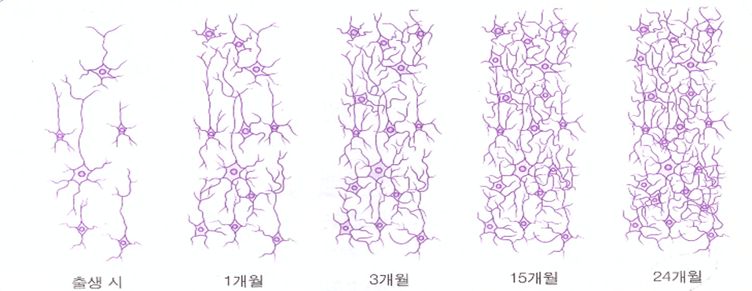
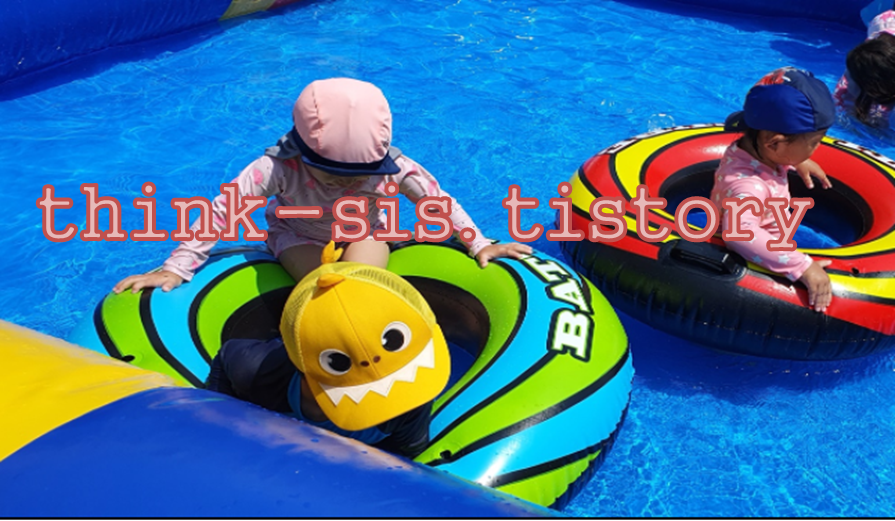

1. 놀이의 의의
엄마는 아이가 눈 뜨는 순간부터 잠들 때 잠을 자는 모습까지 하루 종일 관찰
아이는 태어날 때 두뇌의 90%를 영유아기에 형성하고 발달을 한다. 신경망의 발달은 걷고, 말하고, 학습할 수 있게 해 준다. 그 중 대뇌는 인생 초기인 영아기에 엄청난 속도로 빠르게 발달한다. 출생 초기에 신생아의 대뇌는 성인 대뇌 무게의 약 25%에 해당하지만, 2세가 되면 약 75%에 이를 정도로 급격하게 성장한다.
영아기 만큼 빠른 속도는 아니지만 유아기에도 대뇌는 계속해서 성장한다. 아이는 3세에서 6세 사이 두뇌의 신경망은 전두엽에서 가장 급속하게 성장하여 합리적인 계획을 세울 수 있도록 한다. 그래서 출생 후부터 조기교육에 대한 관심이 증하하면서 어떻게 하면 아이를 똑똑하게 키울 수 있는지에 대한 고민을 하는 부모들이 많다.

놀이가 인지발달에 얼마나 중요하며 어떤 영향을 미치는지
놀이란 인간의 모든 신체적·정신적 활동 가운데 생존과 관련된 활동을 제외한 것으로 보통 일과 대립되는 개념으로 쓰인다. 하나의 활동을 놀이라고 이야기할 수 있으려면 그것은 다섯 가지 필수적 특성을 가지고 있어야 한다. 신생아가 모빌을 보는 것부터 딸랑이를 가지고 흔드는 것, 블록으로 성을 쌓는 것까지 기초적인 인지 능력이 향상된다. 아이들의 놀이에는 규칙이나 방법이 따로 없다. 아이는 마음껏 상상력을 표현하는 것이 바로 창의성 개발의 시초가 되는 것이다.
아동은 놀이를 통해 사회적 역할을 연습하고 불안을 해소하며 갈등을 처리한다.

놀이는 곧 생활이며 학습이다
영유아들은 놀이를 통하여 배우기 때문에 놀이와 학습의 구별이 없다. 일상생활 속에서 재미있는 일이 곧 놀이가 되며 매일 매일의 일상이 바로 학습이 된다. 영유아들은 하루 중 잠잘 때를 제외하고는 거의 쉬지 않고 놀이를 한다. 영아기와 유아기 놀이는 영유아의 기본적인 생활일 뿐 아니라 학습의 바탕이 되기 때문에 매우 중요하다.
놀이의 특징은 다음과 같다.
첫째, 놀이는 내적으로 동기화된 것이다.
둘째, 놀이는 그 자체가 완전한 만족을 주는 것이다.
셋째, 놀이와 관련된 특성은 참여자가 그것을 자유롭게 선택해야 한다는 것이다.
넷째, 놀이는 즐거워야 한다.
다섯째, 놀이는 융통성과 창의성이 있는 것이다.
여섯째, 놀이는 흥미에 맞추어 가장과 현실의 왜곡이라는 요소를 포함한다.
일곱째, 아이는 놀이에 적극적으로 참여한 것이다.
참고자료
전성연(2001), 교수-학습의 이론적 탐색, 원미사
김재은(1998), 아동의 인지발달, 창지사
김수영 외(2002), 유아놀이의 이론과 실제, 양서원
2021.11.16 - [분류 전체보기] - 정서, 행동의 발달 - 정서표현의 특징과 요인
정서, 행동의 발달 - 정서표현의 특징과 요인
인간은 기쁨이나 슬픔, 두려움과 불안과 같은 기본 정서를 가지고 태어난다. 정서는 자주 변하고 빈번하게 나타낼 수 있도록 해야 한다. 정서는 내적·외적 자극에 직면하면 발생하거나 자극에
think-sis.tistory.com